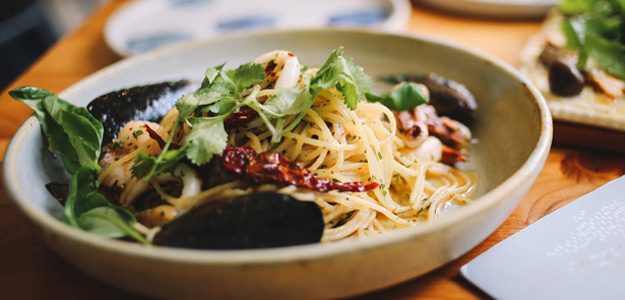
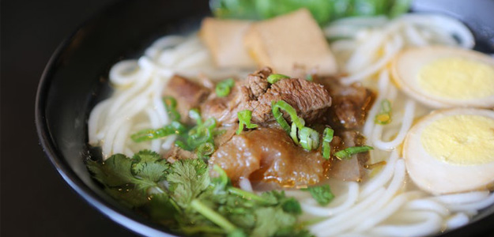

<!--
  Generated template for the MenuFoodPage page.

  See http://ionicframework.com/docs/components/#navigation for more info on
  Ionic pages and navigation.
-->
<ion-header>

	<ion-navbar>
		<ion-title>General Menu</ion-title>
	</ion-navbar>

</ion-header>


<ion-content>
	<ion-card>
		
		<div class="card-title">Korean Chick</div>
	</ion-card>
	<ion-card>
		
	</ion-card>
	<ion-card>
		
	</ion-card>


</ion-content>
